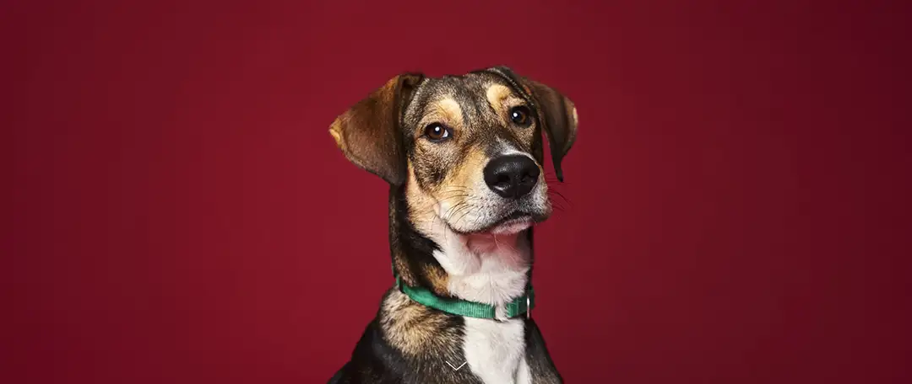
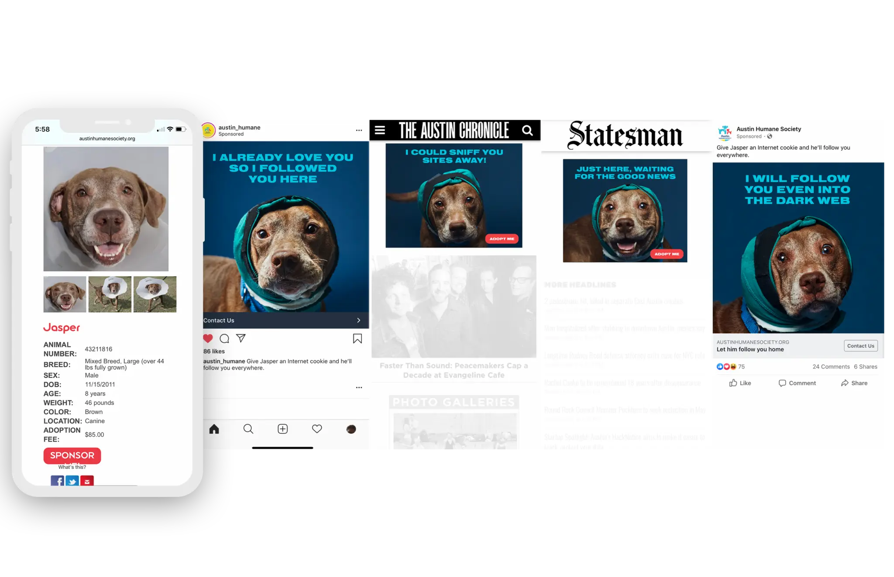
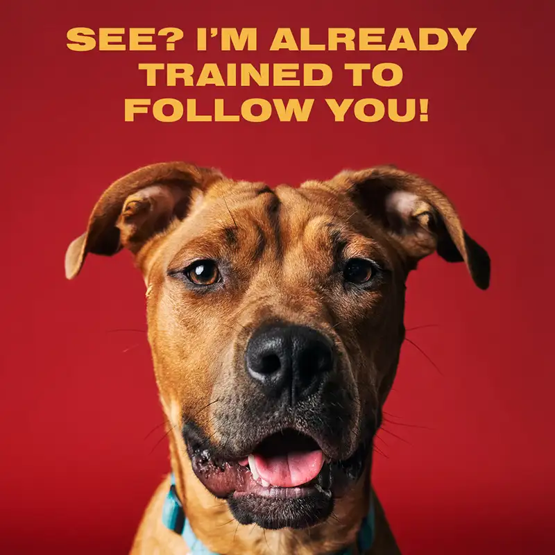
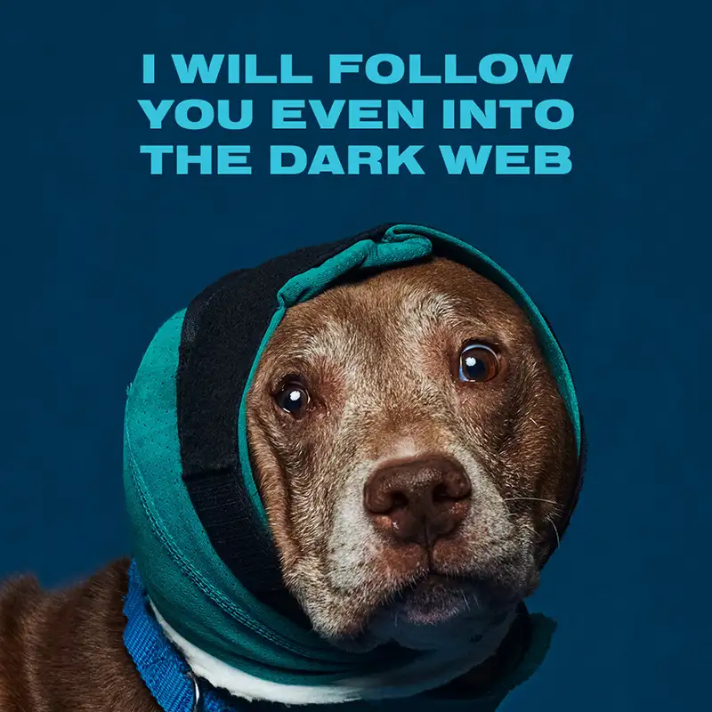
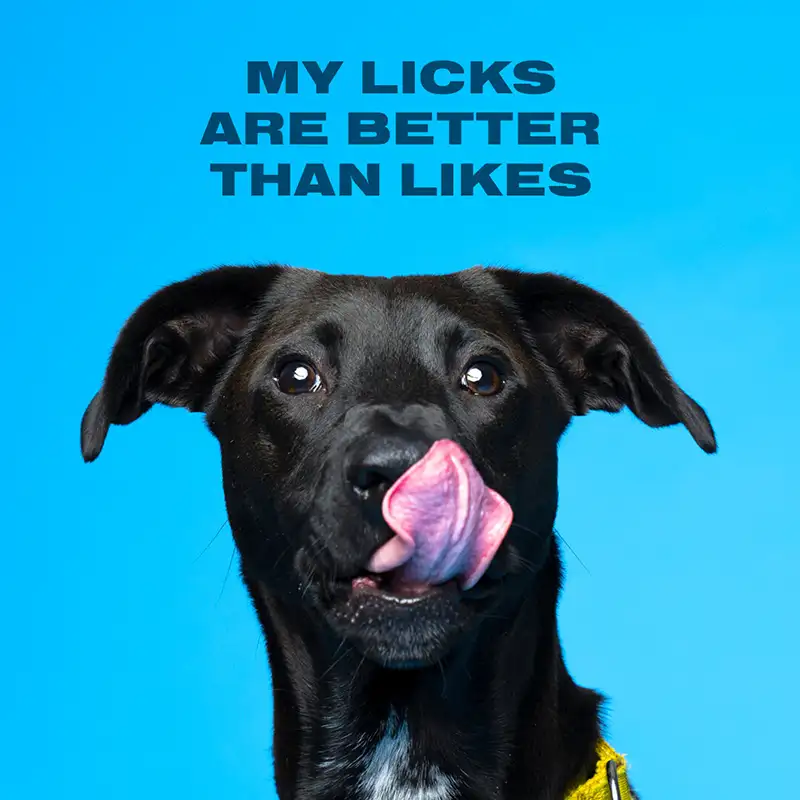
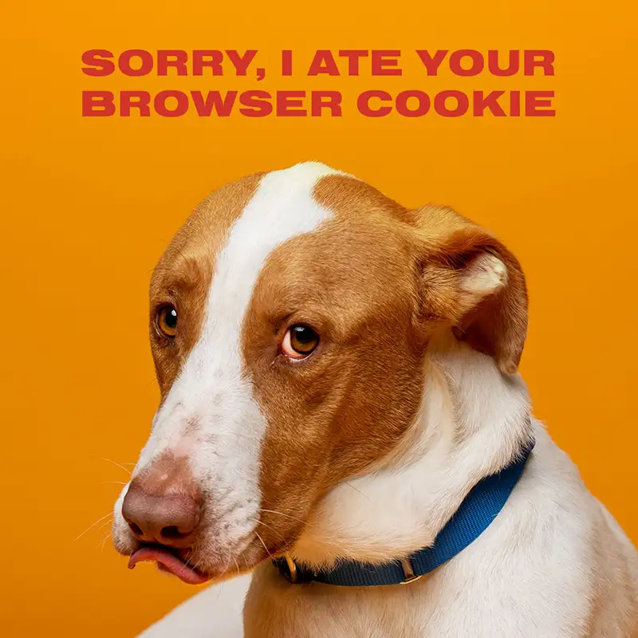
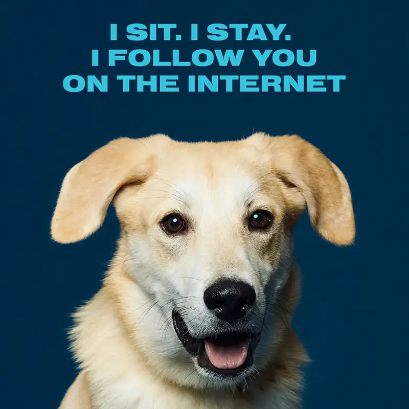
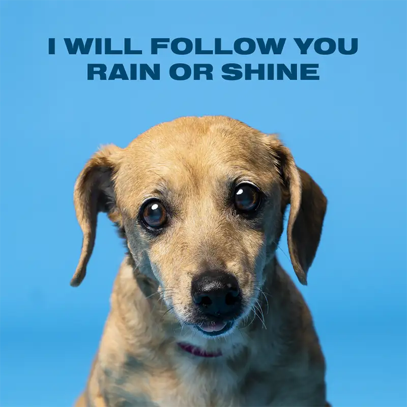
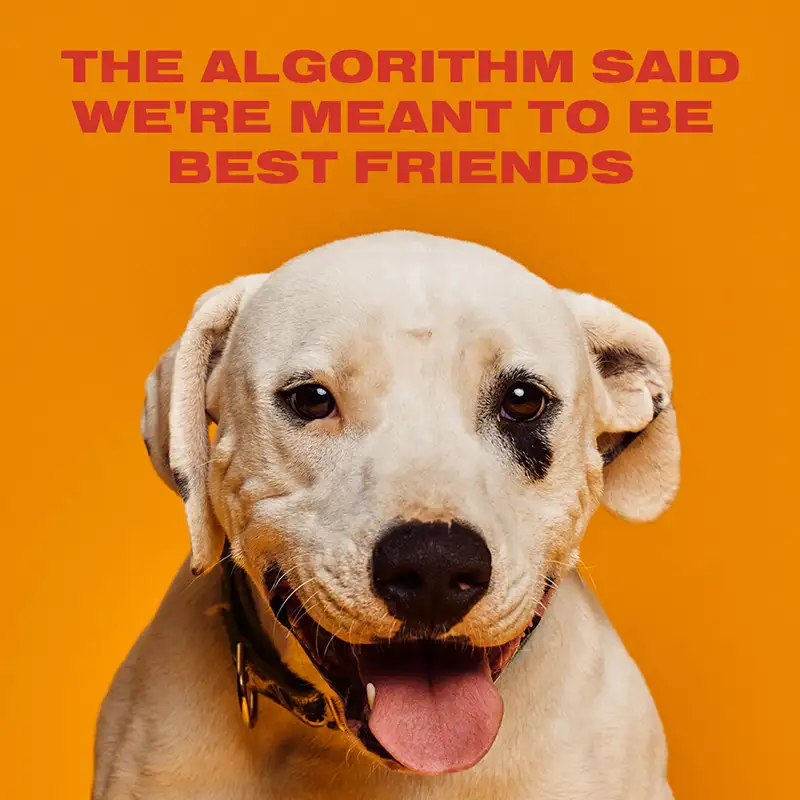
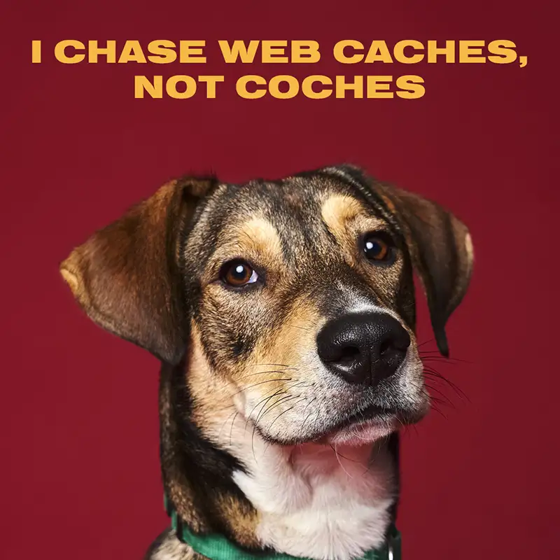

HERO IMAGE // LOYAL RETARGETING ADS
CASE FILM // LOYAL RETARGETING ADS

SYSTEM // RETARGETING FLOW

WEB COMPANION // SCOOBY

WEB COMPANION // JASPER

WEB COMPANION // JAMESON

WEB COMPANION // COOPER

WEB COMPANION // CHERUB

WEB COMPANION // RAINBOW

WEB COMPANION // ZEUS

WEB COMPANION // JOEY